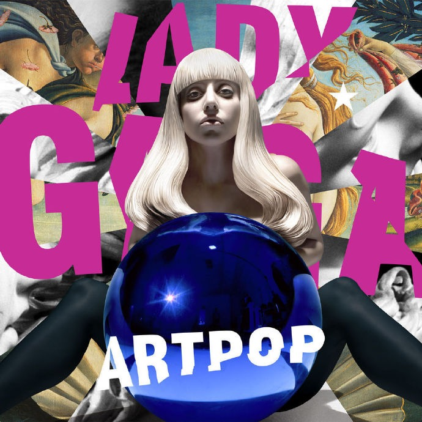
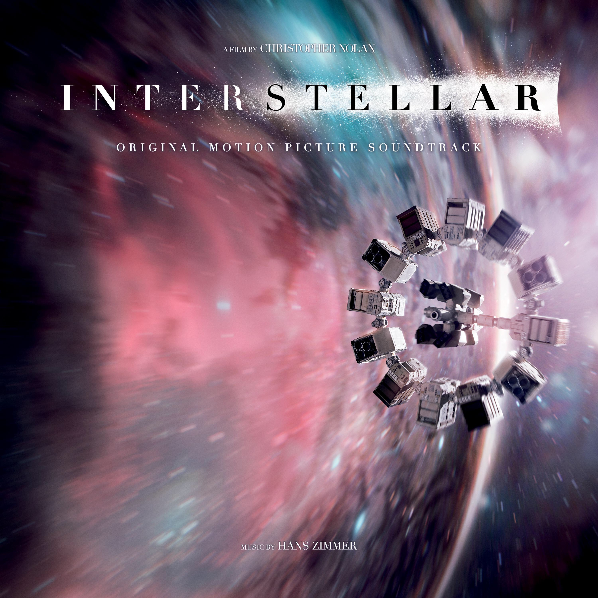

TRIAL PLAYER
- 开启灰度模式
- 更换纯色背景
- 选项 3...
- 选项 4...
查看每日精选

ARTPOP
距'Born This Way'已两年之久，2013年Lady Gaga光棍节献礼，发表个人第三张专辑《文艺复兴》。这张专辑在11月6日于日本iTunes首发，德国、澳大利亚、新西兰、奥地利11月8日发行，全球其他地区则在11日发行。这张专辑的发行介质，在以往的实体CD、数字音乐的基础上，特别创新研发了一套手机应用程序(smartphone app)配合专辑的发行。
BELIEVER
2016年2月，在结束了长达10个月并且曾经造访台湾的「谜雾幻镜 世界巡回」之后，Imagine Dragons宣布进行短暂休息，在长达半年的充电后，团员们又迫不及待地回到录音室，进行新专辑的创作和录制，主唱丹表示：「这次的音乐，是Imagine Dragons有史以来最大的一次进化和突破，而对我们来说，也是目前为止最真实、最赤裸的作品。」，怀抱着超越以往自我的目标，两年多来的淬炼与各种曲风反复实验后，终于交出了乐坛殷切期盼的最新专辑【超进化Evolve】。
Love The Way You Lie
埃米纳姆（Eminem）是美国的一名说唱歌手。其风格类型为：Hardcore Rap（硬核说唱）。埃米纳姆最大的突破就是证明白人也能介入到黑人一统天下的说唱（RAP）界中，而且获得巨大的成功。同时他的叛逆不仅长期以来深受美国青少年喜爱，也让他在舆论中始终遭到抨击。Eminem获得的奖杯总数窜至历史第三位，居麦当娜和皮特-加布里埃尔之后。
夏日限定歌单
-
FEVER DREAM11首Of Monsters And Men
-
冰柠夏日 | 感受一丝清凉节拍30首夏日清凉预定>>>>>>
-
人生赢家：纵有疾风起，人生不言弃89首随身音乐厅
为你推荐
-
Nomad11首Audiomachine
-

Interstellar (Original Motion Picture Soundtrack) (星际穿越)30首Hans Zimmer
-
French Piano and Choral Music1首凯瑟琳.史托特